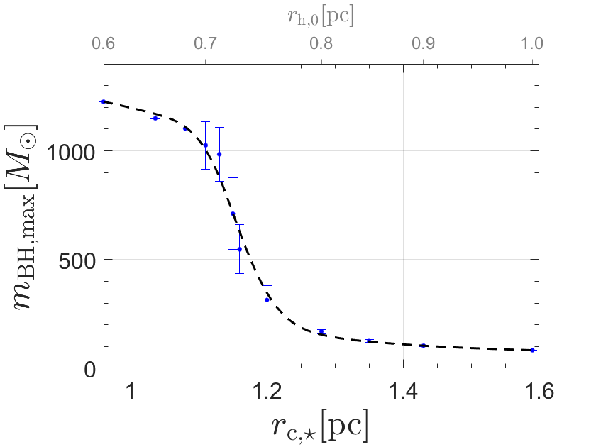
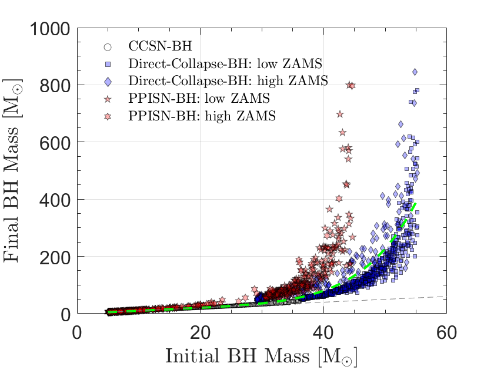

Project: ProtoBH "Black Hole Spin and Mass Function in Proto-clusters"
contact: zacharias.roupas@unimib.it
Black holes are key physical systems ...

The estimated maximum mass of a black hole ...

The estimated shift of the masses of black holes ...
This project focuses on calculating ...